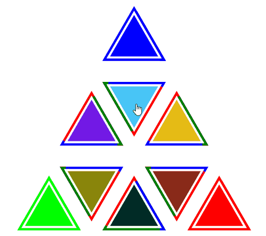

TheConnManA site for JavaScript things. |
Games
Below are some games I've created using jQuery and D3. I used them as a way to learn D3, but they were also pretty fun to make. As you can imagine, I reused a lot of code between them, so they look fairly similar. Circles and Briangles use variations of the same game engine, which was also fun to make.
Briangles
Briangles is the first game I created. It's a little complicated and didn't go over as well as I hoped, but it's unique and was fun to make (except for the trigonometry I had to do to get the triangles to rotate correctly). It was a good first experiment in D3 and was my first real experience with SVG. Briangles is also where I created the basic single-page layout and CSS. The narrow content, gray scale color scheme was influenced by other GitHub pages sites and I used it throughout my other games and this site.
The goal and instructions of Briangles are below and the game can be played by clicking on the screenshot to the right. The code is all public on GitHub.
GOAL: The goal of the game is to split up the rest of the triangle colors into their primary components of red, green, and blue and move these
primary colors into their corresponding corner in the minimum number of splits.
HOW TO PLAY: Each triangle starts filled with a random color and its three borders each represent a primary color. Right click
on a triangle to separate its fill color into red, green, and blue. Each primary color passes through its designated border and its intensity is added
to the adjacent triangle. Left click to rotate a triangle, changing which adjacent triangles receive which colors.
Circles
Circles is the second game I created and was significantly more successful than Briangles. I tried to keep play very simple and make levels which would get more and more difficult. Some of the earliest feedback was that the game got boring after a few levels. This was because the next level just meant there was an additional circle and they would all move faster (lame). I decided to pull most of the internal game logic out into parameter which would describe each level (for the techies out there here's the actual commit). This led to more flexibility in level description. I had unknowingly created a game engine.
The game engine led to a wide array of easily created levels (they're all described in a single line of JSON), but that just means less work for me. The benefit for users is that they can create their own levels if given the tools to construct these parameters. Early on I added these tools (accessible after beating 10 levels) so users can experiment with the engine and even submit their own levels to the creator (me).
The goal and instructions of Circles are below and the game can be played by clicking on the screenshot to the left. The code is all public on GitHub.
GOAL: The goal of each level is to create as large of a bubble as possible without it touching the moving circles. Clicking on the game will create
a small bubble which gets larger with a constant speed. The bubble stops growing when any other circle runs into it. To pass the level you need to reach a size of over 100.
If you beat the first 10 levels you get to create custom levels of your own.
HOW TO PLAY: At first there will be a few slow moving circles. Click anywhere on the board (probably in a space where other circles are moving away)
and a bubble will begin to grow. There is a threshold size for the bubble to advance to the next level. Each level has more, faster moving obstacles.
Shape Escape
Shape Escape is the latest installment and is largely bootstrapped off of Circles. The UI and game engine structure are almost identical, but the game play is very different. In Shape Escape the user moves around using the arrow keys and tries to avoid the other shapes for 10 seconds. Currently all the other shapes are circles, but I'm hoping to add more soon. Shape Escape is very much still in development and all feedback is appreciated.
The goal and instructions of Shape Escape are below and the game can be played by clicking on the screenshot to the right. The code is all public on GitHub.
GOAL: Stay alive for 10 seconds! Avoid getting touched by any of the many enemies around the map.
HOW TO PLAY: Use the arrow keys to move around the map. The game starts when you start moving, so make a play and stay alive!
Analysis
iTunes Analyzer
The iTunes Analyzer was born from my interest in both analytics and my iTunes library. I've searched over the years for something that would tell me a little more than some basic sorting in iTunes would and found a few, but they weren't quite what I was looking for. I wanted something that was interactive, visually appealing, and didn't require a download. The analyzers I found had some of these components, but none worked without a download and some install instructions.
To remedy the lack of analyzers I decided to create my own. I've been working with D3 a lot and used this project to practice a little more. Hopefully you can use it to discover some interesting facts about your iTunes library.
Plugins
I've also written two jQuery plugins.
Doc Collapse
My first jQuery plugin is Doc Collapse. I was writing the long and tedious docs for my startup and couldn't find a good plugin to collapse the docs to make them more manageable. There were a few collapsible plugins out there, but they were usually only one level deep. I wanted an infinitely deep (hopefully your docs aren't that deep...) collapsible plugin with indentation, rotating indicators, and smart formatting, so I created Doc Collapse.
GitHub Mini-Profile
My second jQuery plugin is GitHub Mini-Profile. I found a GitHub Card project, but it required users to import HTML, some JavaScript, and some CSS. More importantly, it wasn't customizable. I decided to run with the idea and generated the first few versions of GitHub Mini-Profile in a few hours one Sunday. It is entirely in JavaScript and CSS, so there is no need to import any HTML. It is also customizable so you can show different fields and customize the colors. The plugin is even used on this site to create the card at the top.
About Me
I'm a software developer who has a recent interest in web development. I'm an MIT grad with a Physics degree, so I'm going back to my roots by writing some game engines (not really, I haven't implemented any Quantum Mechanics). Before web development I've mainly worked with Java and Python. Web development seems much more interesting.